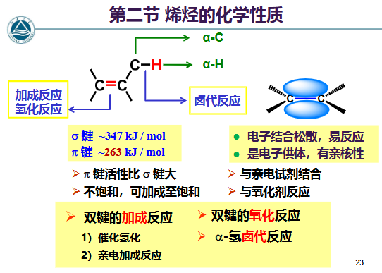
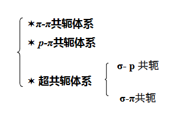

烯烃
顺反异构
- 由于键无法自由旋转产生
- 相同基团在双键同侧为顺式（cis），不同侧为反式（trans）
- 形成条件：每个双键碳原子必须连接两个 不同的原子或原子团
命名 命名
- 选择最长连续碳链为主链，当C=C为主链的一部分时，按其主 链碳原子数称为“某烯”，超过十个碳原子则称为“某碳烯”
- 编号从靠近双键一端编起，使表示双键位置数字尽可能小，然 后将双键中编号较小碳原子序号写在“某烯” 前面，表示双键在碳链 中的位置，取代基名称和位置等表示方法与烷烃类似
- 如果最长碳链不包含C=C，则以烷烃为母体，把烯烃部分作为取代 基，烯烃分子中去掉一个氢原子的基团称烯基
- 常见的烯基团： 规则：从远到近命名，同羧酸衍生物基团的命名，如果连接碳是双键则叫做亚基
- 如果最长碳链不包含C=C，则以烷烃为母体，把烯烃部分作为取代 基
- 成环碳原子编号时，1,2-留给双键碳
- 桥、螺环烯烃编号时，先满足桥、螺环的编号规则，再考虑给双键小编号 ，位次号通常省略
- 顺反命名法
- 相同基团在同侧为cis，在异侧为trans
- Z,E命名法：优先基团在同侧为Z，相当于cis，为zusammen（相同）；优先基团在异侧为E，相当于trans，为entgagen（相反）
- 次序规则：以原子序数大小为序排列，大的优先，小的在后。同位素原 子以质量较高者优先 eg:I > Br > Cl > S > F > O > N > C > D > H 与双键碳原子相连的两个原子相同时，比较连在这两个原子上 的其他原子，原子序数较大者优先；若与双键碳原子相连的基团具有双键或叁键时，将其看作连 接两个或三个相同的原子 ；取代基互为对映异构体时，R- 构型先于S- 构型；取代基互为几何异构体时，Z型优先于E型
化学性质分析

反应
- 催化加氢 还原 加成
- 特点：金属催化剂吸附，所以是顺式加成，两个H加在同一侧 立体选择性
- 亲电加成 加成 无立体选择性，进攻方向随机 立体选择性
- 加HX： X=I,Br,Cl 活性HI>HBr>HCl 反应机理是双键进攻HX，一个C上H，一个C形成碳正离子，稳定性重排，然后上到碳正离子上，决速步骤是碳正离子
- 碳正离子能迁移，也会导致基团迁移，形成更加稳定的碳正离子
- 加硫酸： 生成硫酸氢酯，遵循马氏规则，后续水解： 控温 间接水合法制取醇，且可以生成仲醇
- 加水加醇： R也可以是H，即加水，这是直接水合法，但是选择性差，不常用 控温 控pH反应
- 加卤素： 机理：卤素形成和然后进攻正离子进攻双键，形成卤素鎓离子，位阻大，使得卤素负离子只能从背面进攻，形成反式加成 鎓离子 立体选择性 卤素鎓离子符合八隅体 八隅体 X为Cl,Br，F不反应，因为难以形成F正离子
- 加次卤酸： 依旧卤素鎓离子机制，符合马氏规则
- 过氧化反应：用过氧化物，符合反马氏规则，因为走自由基机理，位阻优先，导致末端自由基稳定（特殊的不算） 注意：HBr适用，但是HCl和HI不适用，仍然符合马氏规则
- 硼氢化 协同加成：
- 主反应：
- B原子是很强的E，所以B加到双键含H多的C上（δ-）
- 后续反应：
- 诱导效应 -C
- 由于电负性不同的取代基的影响，使整个分子中的成键电子云密度向 某一方向偏移，使分子发生极化的效应
- EWG有-I效应，主要是；EDG有+I效应，主要是-R
- eg:，-Me是EDG，将电子推向远端C，所以左边碳是δ+，右边是δ-，右边被H进攻，左边被X进攻，即H上加H，所谓的Markovnikov规则（马氏规则） 人名反应 基团分类：对称烯烃与卤化氢加成时，卤化氢中 的氢总是 加到含氢较多的双键碳原子上，卤素加到含氢较少的碳原子上，实质是形成稳定的碳正离子
- 诱导效应沿着σ键传递，三个键以上效应消失
- 注意：强EWG不能与碳正离子相连，不稳定，比如不能连碳正离子，这是一种不遵循马氏规则的例子
- EWG会降低电子云密度，使得亲电加成速率降低
- 氧化 氧化
- α-H的反应（烯丙位）
- 制备：
- 醇脱水
- 卤代烷烃碱性环境脱卤化氢
 作用：持续提供低浓度
作用：持续提供低浓度炔烃
命名 命名
- 简单的：烯改炔
- 同时有烯烃炔烃不在一条链：选最长的作为主链
- 在同一条主链上：编号先最小，如果相同那使得双键最小，命名时先烯烃后炔烃（烯=ene，炔=yne）
化学性质分析

反应
- 酸性 酸碱反应
- 炔钠的作用
- 和伯卤代烃反应： 不能用仲叔卤代烃，会消除
- 和环氧开环生成β-炔基醇
- 和酮生成α-炔基醇
- 末端炔烃的鉴别：加银氨溶液或者铜氨溶液分别会生成白色和红色沉淀
- 还原 还原 加成
- 亲电加成 加成
- 亲核加成 加成
- 协同加成 加成 协同加成
- 氧化 氧化
- 聚合反应 加成： 控pH反应 从简单炔烃构建复杂化合物
- 制备乙炔
- 电石水解
- 甲烷部分氧化法
- 卤代烃制备
- 邻二卤代烃： 也可以直接2equiv.氨基钠 控pH反应
- 偕二卤代烃：
- 四卤代烃：见上，用Mg或者Zn
- 复杂炔烃：用炔钠
共轭
共轭体系
在分子结构中，含有三个或三个以上相邻且相互平行的p 轨道交盖形成离域键（大 π键）这种体系称为共轭体系

- ：多个不饱和键构成的共轭
- ：含p轨道的原子与键直接相连，eg：烯丙基自由基是，烯丙基碳正离子是缺电子，卤代烯烃因为卤素有孤对电子，是多电子
- 超共轭：
- ，双键的碳氢键键形成超共轭，超共轭比普通共轭弱，参与超共轭的碳氢键越多，超共轭效应越强
- ，碳氢键和未成键p轨道（正离子，自由基）形成超共轭，比如乙基碳正离子；所以，超共轭越多，电荷越分散，碳正离子或者自由基越稳定
共轭效应 -C
- 由于电子的离域使体系的能量降低、分子趋于稳定、键 长趋于平均化的现象叫做共轭效应(Conjugative effect, 用C表示)，也叫离域效应
- +C：凡是能给出电子（推电子）的原子或基团，称 其具有正共轭效应，用+C表示
- -C：凡是具有吸引电子的原子或基团，称其具有负共轭效 应，用-C表示，多出现在 π-π共轭体系
- I和C的对比：
 注意极性的交替出现
注意极性的交替出现
共振论
- 当一个分子、离子或自由基的结构可用一个以上不同电子排列的 经典结构式（共振式）表达时，就存在着共振；这些共振式(极 限结构)均不是这一分子、离子或自由基的真实结构，其真实结 构为所有共振式的杂化体；所以，共振式只是理论存在形式，而真实形式是一种混合态
- 共振论对于共振式画法的规定：
- 参与共振的原子应有p轨道
- 所有共振式的原子排列相同
- 所有共振式均符合Lewis结构式
- 所有共振式具有相等的未成对电子数
- 共振式稳定性比较：
- 共价键数目最多的共振式最稳定
- 共振式的正负电荷越分散越稳定
- 具有完整的价电子层的共振式较稳定
- 负电荷在电负性大的原子上的共振式较稳定
- （以上决定贡献从大到小）